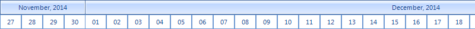
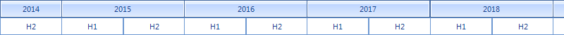
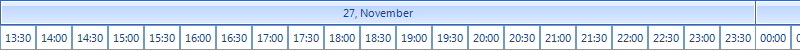

Timeline views
RadGanttView offers a number of built-in timeline views which allow you to show the timeline in different scales.
It is reasonable to change the timeline view when the user zooms in or out. This will give the users a precise measurement
of time in every zoom level.
All built-in views can be found in the TimeRange enumeration. Here are the different views offered by
RadGanttView out-of-the-box:
- *TimeRange.Week *– Each element of the upper row represents one week. The elements on the lower row represent days.
[C#]
this.radGanttView1.GanttViewElement.GraphicalViewElement.TimelineRange = TimeRange.Week;
[VB.NET]
Me.RadGanttView1.GanttViewElement.GraphicalViewElement.TimelineRange = TimeRange.Week

- *TimeRange.Month *– Each element of the upper row represents one month. The elements on the lower row represent days.
[C#]
this.radGanttView1.GanttViewElement.GraphicalViewElement.TimelineRange = TimeRange.Month;
[VB.NET]
Me.RadGanttView1.GanttViewElement.GraphicalViewElement.TimelineRange = TimeRange.Month

- *TimeRange.Year *– Each element of the upper row represents one year. The elements on the lower row represent months.
[C#]
this.radGanttView1.GanttViewElement.GraphicalViewElement.TimelineRange = TimeRange.Year;
[VB.NET]
Me.radGanttView1.GanttViewElement.GraphicalViewElement.TimelineRange = TimeRange.Year

- *TimeRange.YearHalves *– Each element of the upper row represents one year. The elements on the lower row represent half year periods (roughly six months).
[C#]
this.radGanttView1.GanttViewElement.GraphicalViewElement.TimelineRange = TimeRange.YearHalves;
[VB.NET]
Me.radGanttView1.GanttViewElement.GraphicalViewElement.TimelineRange = TimeRange.YearHalves

- *TimeRange.YearQuarters *– Each element of the upper row represents one year. The elements on the lower row represent quarter year periods (roughly three months).
[C#]
this.radGanttView1.GanttViewElement.GraphicalViewElement.TimelineRange = TimeRange.YearQuarters;
[VB.NET]
Me.radGanttView1.GanttViewElement.GraphicalViewElement.TimelineRange = TimeRange.YearQuarters

- *TimeRange.Day *– Each element of the upper row represents one day. The elements on the lower row represent hours.
[C#]
this.radGanttView1.GanttViewElement.GraphicalViewElement.TimelineRange = TimeRange.Day;
[VB.NET]
Me.radGanttView1.GanttViewElement.GraphicalViewElement.TimelineRange = TimeRange.Day

- *TimeRange.DayHalfHours *– Each element of the upper row represents one day. The elements on the lower row represent half hours (30 minutes period).
[C#]
this.radGanttView1.GanttViewElement.GraphicalViewElement.TimelineRange = TimeRange.DayHalfHours;
[VB.NET]
Me.radGanttView1.GanttViewElement.GraphicalViewElement.TimelineRange = TimeRange.DayHalfHours

- *TimeRange.DayQuarterHours *– Each element of the upper row represents one day. The elements on the lower row represent quarter hours (15 minutes period).
[C#]
this.radGanttView1.GanttViewElement.GraphicalViewElement.TimelineRange = TimeRange.DayQuarterHours;
[VB.NET]
Me.radGanttView1.GanttViewElement.GraphicalViewElement.TimelineRange = TimeRange.DayQuarterHours

- *TimeRange.Hour *– Each element of the upper row represents one hour. The elements on the lower row represent minutes.
[C#]
this.radGanttView1.GanttViewElement.GraphicalViewElement.TimelineRange = TimeRange.Hour;
[VB.NET]
Me.radGanttView1.GanttViewElement.GraphicalViewElement.TimelineRange = TimeRange.Hour